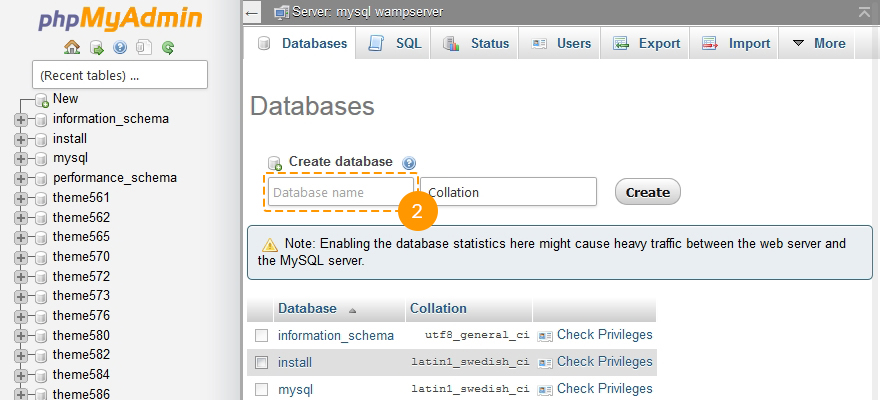

Giriş Bu pakette neler bulabilirsiniz ve nasıl kullanabilirsiniz
Bu OpenCart şablonunu satın aldığınız için öncelikle teşekkür ederiz. Bu kılavuz sizi OpenCart sayfanızı kurmanıza ve ayarlamanıza yardımcı olacak parçalardan oluşmaktadır. Bu kılavuzu olabildiğince basit ve kolay takip edilebilir bir biçimde hazırlandı.
OpenCart nedir?
OpenCart ücretsiz açık kaynaklı bir e-ticaret platformudur. OpenCart size başarılı olabilecek online mağaza açmak için profesyonel ve güvenilir bir alt yapı sunar. Bu alt yapı hem kullanıcı arayüzüne önem veren web geliştiricelrine hemde firmasını ilk defa internete açacak satıcılara hitap edebilmektedir. OpenCart mağazanızı dilediğiniz gibi şekilendirmenize yardımcı olacak bir çok özelliğe sahiptir. OpenCart araçları sayesinde mağazanızı olabilecek en yüksek seviyelere getirebileceksiniz. Daha fazla
Dosya Yapısı
Aşağıdakiler şablon paketine dahildir:
- documentation - şablon ve motor kurulumu hakkında detaylı bir kılavuz
- documentation.html - Ana döküman dosyası. Tamda bulunduğunuz yer :)
- screenshots - Tema hakkında ekran görüntüleri içerir;
- sources - Adobe Photoshop source dosyalarını içerir;
- themeXXX - içerir;
- themeXXX(full).zip - OpenCart dosyasını içeren dosya, şablon ve örnek şablon içerikleri (yeni bir kurulum için);
- themeXXX(update).zip - örnek şablon içeriklerini içermeyen şablon dosyası (hali hazırdaki mağazanın üzerine kurulum yapmak için);
- themeXXX(extensions).zip - örnek şablon xml dosyaları ile dosya;
- unzip.php - full/update package .zip dosyası üzerinden arşivli dosyları host server'e yüklerken kullanılacak dosya.
- info.txt - dosyalar hakkında bilgi içerir;
- fonts_info.txt - şablonda kullanılan fontlar hakkında bilgi içerir.
Hazırlık Çalıştırabilmek için bilmeniz gerekenler
OpenCart temanızı çalıştırabilmek için bir takım hazırlıklar yapmalısınız.
Yazılım ayarları
OpenCart teması ile rahatça çalışabilmek için tüm gerekli programları edinmenizi tavsiye ederiz. Gerekli tüm programları şablon izlenim sayfasından bulabilirsiniz.
Gereksinimler şablondan şablona değişebilmektedir bu nedenle burada size genel bir fikir vereceğiz:
- Adobe Photoshop programına ihtiyacınız olabilir. PSD dosyalarını düzenlemek için Photoshop programına ihtiyaç duyacaksınız, özellikle grafikleri düzenlemek istiyorsanız mutlaka bu programı edinmelisiniz.
- Şablonların kaynak kodlarını düzenlemek istiyorsanız, Adobe Dreamweaver, Notepad++, Sublime Text vb. code editor'lere ihtiyacınız olacak.
- Dosyaları hosting server'lere yükleyebilmek için, FileZilla, CuteFTP gibi FTP manager'lere ihtiyacınız olacak.
- Buradaki kaynaklardan arşivleme programlarının kullanımını öğrenebilirsiniz. WinZip(PC) ve StuffitExpander(MAC).
Hosting
OpenCart bir PHP/MySQL tabanlı yazılım olduğu için, hosting enviorenmentleri OpenCart'ı kullanmadan önce hazırlamanız gerekmektedir
Eğer halı hazırda bir hosting servisiniz varsa, OpenCart kullanabilmek için gerekli olan sistem gereksinimlerine sistem gerekesinimlerine sahip olup olmadığından emin olunuz.
OpenCart'ı dilerseniz kendi bilgisayarınızda yerel bir sunucu kurarak çalıştırabilirsiniz. Yerel bir sunucu kurmak için lütfen WAMP, AppServ, MAMP, vb.programlar kullanınız. Bu programlar normal bir kurulum yapar gibi yapıp OpenCart kuıllanmak için kurulabilir.
Lütfen aşağıdakikaynaklara göz atınız:
Başlangıç çalıştırmak için hangisine tıklamanız gerekmektedir
Full Installation
Sunucunuzda OpenCart kurulu değilse bu kurulum seçeneği size uygun. Bu kılavuzda ki 'themeXXX(full).zip' dosyası OpenCart motorunu ve örnek tema datasını barındırmaktadır böylelikle OpenCart motorunu ayrıca yüklemek zorunda kalmazsınız. Örnek data OpenCart sitesinin şablondaki gibi görünmesine ve tüm içerikleri ve modülleri test etmenize yarayacaktır.
Update Installation
Bu seçeneği eğer önceden websitenizde OpenCart tabanlı çalışıyorsanız ve sadece temayı değiştirmek istiyorsanız kullanılır.
Full Installation
Complete installation metodu sıfırdan başlayıp bir OpenCart websitesi kurmak için kullanılır. Önceden gerekli hazırlık adımlarını tamamladığınızı varsayıyoruz.
Database oluşturma
Hosting server'e gerekli dosyaları yükledikden sonra OpenCart websiteniz için yeni bir database oluşturabilirsiniz. Database'inizi hosting control panelinden database management tool bölümünü kullanarak oluşturabilirsiniz (genellikle PhpMyAdmin).
phpMyAdmin tool sayesinde 3 adımda yeni database'inizi oluşturabilirsiniz (aşağıdaki slideları takip edin):
- Yukardaki navigasyon menüsünden Database tuşuna tıklayın ve database listelerine ulaşın.
- Database adınızı "Create new database" bölümüne giriş yapın.
- Sağdaki Create tuşuna tıklayın.
Artık databseinizi, database listesinde görebilirsiniz. İsmin üzerine tıklayarak database'inize ulaşabilirsiniz.
-

1. Database tuşuna tıklayıp database listesine ulaşın.
-

2. Input the database name.
3. Click the Create button. -

4. You can now see your database in the database listing. Click on its name to get access to the database.
Ayrıca videolu anlatım olarak database oluşturmayı izleyip öğrenebilirsiniz Database nasıl oluşturulur.
Database oluşturma konusunda herhangi bir sorun yaşıyorsanız sunucu sağlayıcınızdan yardım isteyiniz.
Yükleme ve Unzip yapma
OpenCart kullanmaya başlamak için hosting serverinize dosyaları yüklemelisiniz. Bunu bir FTP manager kullanarak yapabilirsiniz.
- Şablon paketi dosyanızı açınız.
- 'unzip.php' ve 'themeXXX(full).zip' dosyalarını seçip server'e yükleyiniz ( Dosyalar servere nasıl yüklenir, Dosyalar Cpanel kullanılarak servere nasıl yüklenir (WebHost Manager, WHM)).
- 'unzip.php' serverde bulunduğu yolu tarayıcınıza yazınız.(http://your_domain_name/unzip.php) .
- Aşağıdaki ekran karşınıza gelecektir:

Resim 1. Unzip.php ekranı.
- 'Choose your zip file' bölümünden, yüklemiş olduğunuz 'themeXXX(full).zip' dosyasını seçiniz.
- 'Unzip to' bölümünden, dosyaları açmak isdediğiniz bölümü seçiniz.
- 'Unzip' tuşuna tıklayıp devam ediniz.
Dosyaları açmayı planladığınız bölüme gerekli izinleri vermeyi unutmayınız. İzinler server ayarlarınıza göre CHMOD 755 veya 777 şeklinde olmalıdır.
OpenCart kurulumu
Tarayıcınızı açınız ve adress bölümüne OpenCart dosyasının yolunu giriniz (örnek: http://your_domain_name/opencart). OpenCart kurulum ekranını göreceksiniz:
Kurulum 1. adım Lisans
Resim 1. OpenCart Kurulum. Adım 1. Lisans
OpenChart lisansını kontrol ediniz ve kuralları kabul ediyorsanız, I agree to the license kutusunu işaretleyiniz ve Continue tuşuna tıklayınız.
2. Adım Kurulum Öncesi

Resim 3. OpenCart kurulumu. 2. Adım. Kurulum öncesi.
Bu adımda OpenCart motoru hosting serveri kontrol edecek: OpenCart gereksinimlerin uygunluğu ve izinlerin doğru ayarlanıp ayarlanmadığı kontrol edilecektir.
Lütfen OpenCart motorunun izinlerinin dosyalara göre aşağıdaki şekilde verildiğinden emin olun:
- chmod 0755 or 0777 image/
- chmod 0755 or 0777 image/cache/
- chmod 0755 or 0777 image/data/
- chmod 0755 or 0777 system/cache/
- chmod 0755 or 0777 system/logs/
- chmod 0755 or 0777 download/
- chmod 0755 or 0777 config.php
- chmod 0755 or 0777 admin/config.php.
Adım 3. Biçimlendirme

Resim 4. OpenCart kurulumu. 3. Adım Biçimlendirme
Bu adımda, database bağlantı detaylarını girmeniz gerekmektedir. Hatırlayacağınız gibi hazırlık adımında MySQL database'i oluşturmuştuk şimdi girmemiz gereken detaylar
- database server name
- database name
- database user name
- database user password.
Bu bilgilere ulaşmakta zorluk çekiyorsanız hosting yöneticinize danışmanızı tavsiye ederiz.
Ayrıca bir store administrator hesabı açmanız gerekecektir. Administrator username, password ve E-mail'i giriniz. Bu detaylar OpenCart administration panel'e ulaşıp mağazanızı yönetmeniz için kullanılacaktır.
Adım 4 Son!

Resim 5. OpenCart kurulum. 4. Adım Son!
OpenCart motor kurulumu için son adımdayız. İki seçeneğiniz bulunmakta: OpenCart ön yüzü, e-ticaret sayfanızı ziyaret etmek veya Open Cart arka yüzü, administration panelini ziyaret etmek.
Bir kurulum yönergesine buradan göz atabilirsiniz: OpenCart. OpenCart engine ve şablonu template nasıl kurulur. (“fullpackage” kullanarak).
Lütfen "install" dosyasını hosting server (ftp) den silmeyi unutmayınız. Bu dosya silinmediği sürece mağazanıza ulaşamayacaksınız.
Aşağıdaki dosyalar güvenlik nedenlerinden dolayı 644 veya 444 olarak ayarlanmalıdır.
- config.php
- index.php
- admin/config.php
- admin/index.php
- system/startup.php.
Kurulum tamamlandı. Mağaza ön yüzüne ulaşmak için, your_domain_name tarayıcınıza yazın.OpenCart administration panele ulaşmak için, your_domain_name/admin tarayıcınıza yazın.
Update Installation
OpenCart sürümünün şablon gereksinimlerine uygunluğunu kontrol edin. Tüm sürümler için OpenCart official website.
- Bir OpenCart şablonunu kurmak için dosyalarını hosting servere yüklemelisiniz. OpenCart şablon paketinde, "themeXXX(update).zip" bulunuz ve OpenCart kurulumunun root'una yükleyiniz.
Videolu anlatıma göz atınız, hosting server dosyalar nasıl yüklenir.
Şablon dosyaları mağazanıza zarar vermez. - Bunu işlemleri tamamladıkdan sonra lütfen unzip.php dosyasını şablon paketinden servere daha önceki dosya ile aynı yere yükleyiniz.
- Bu biter bitmez sayfanızı açın ve tarayıcınızdan URL'ye - unzip.php ekleyin. Şu şekilde görünmelidir: yourwebsite.com/unzip.php.
- "Choose your zip file" bölümünden, themeXXX(update).zip seçin ve "Unzip." tıklayın. Dosyalar açılmaya başlayacak. Bu biraz zaman alabilir.
- yourwebsite.com/install/ tarayıcınıza yazınız.
- Daha sonra, ekrana gelecek kurulum bilgilerini takip edip kurulumu tamamlayınız.
- > Uzatma Installer ve arşiv themeXXX (uzantıları) dosyaları indirmek - Uzantıları gidin, sizin kontrol paneline sitenizi giriş yapın. > Değişiklikler ve ekranın sağ üst köşesindeki kazma yenileme tıklayın - Arşivdeki tüm dosyaları indirdikten sonra, Extensions gidin.
Kurulum için bir tutorial izleyin: OpenCart. Daha önce var olan bir mağaza üzerine bir şablon nasıl yazılır (“update” package kullanılarak).
Uzantı Ayarları
Olark Canlı Sohbet
Demodaki gibi bir canlı sohbet kurmak için Olark resmi websitesine üye olmalısınız. Gerekli bilgileri sağladıkdan sonra alacağınız kodu catalog\view\theme\themeXXX\template\common\footer.tpl önce </body> tag yerleştiriniz.
Çerez Politikası
Aşağıda OpenCart'ı kullanmadan önce kabul etmeniz gereken çerez politikalarını bulacaksınız. Bu modül sitenizde kullanılan çerezlerle ilgili bir uyarı mesajı verecektir. Aşağıdaki linkten ulaşabilirsiniz.
Sonsöz bilgi ve yardım almak için
OpenCart çok işlevli, basit ve kullanıcı dostu bir e-ticaret çözümüdür. Online Mağazanız için kusursuz bir çözümdür. Stadard paket gerekli tüm modülleri ve uzantıları içermektedir. Açık kaynak oluşu müşterilerinize hizmette sınır tanımamanıza yardımcı olur.
Ek Bilgi:
Validation
Юablonlarэmэzda kullanэlan HTML biзimlemeleri ve CSS stilleri, anlamsal olarak doрru ve geзerlidir. Fakat yine de bazэ W3C hatalarэ gцrьntьlenebilir. Kodun %100 W3C geзerliliрini saрlamak, CSS3 ve HTML5 gibi modern teknolojilerin kullanэlmasэnэ engellemektedir. Bizim amacэmэz, yьksek kalitede юablonlar sunarak kullanэcэlarэmэza zengin bir deneyim yaюatmak olduрu iзin, bazen bazэ kurallarэ yэkmak durumunda kalabiliriz.